曲のご紹介
1. Violette -Little Dancer-
森に来て三日目の朝。二人はすっかり仲良くなったメプレと、その友人たちに会いに来ていた。踊り子のヴィオラはメプレの演奏に乗せて、激しく華麗に舞う。
子狐空コメント：弦楽器中心で構成された元気な曲です。テンポよく、ノリよくを意識しました。
2. Viola -Parvus Saltator-
踊りの後、ヴィオラは二人を誘って踊ろうと提案する。二人は少し躊躇したものの、その提案を受け入れてその場にいるみんなで踊ることになったのだった。
子狐空コメント：前曲のアレンジとなります。楽器が増えてにぎやかに、そして最後はダイナミックになりました。
3. Io -Diamantine-
メプレやヴィオラと仲の良いイオは、昔のトラウマで人間不信であった。二人は、人間への恐れから心を開かないイオに対して、そのトラウマを払拭すべく会話を試みるのだった。
子狐空コメント：少々暗い雰囲気で、ジャズチックに仕上げています。イオの過去のトラウマとはいったい。
4. Sion
イオと仲良くなった二人のもとへ、アステルの娘、シオンがやってくる。どうやら二人と勝負がしたいようで、勝てば力を貸してくれるのだという。二人は勝負を受けるのだった。
子狐空コメント：シオンの元気で、無邪気で、しかし力強いキャラクター性を表した戦闘曲風のトラックです。
5. Dark Clouds
シオンに無事勝利した二人のもとへアステルがやってくる。なんでも、森を蝕む存在が現れたのだという。二人はアステルの頼みを受け、森の奥地へと向かう。
子狐空コメント：序盤は重たく、ずっしりとした暗い曲に。後半は二人の決意を表すかのような壮大な感じにしております。
6. Woods in the Twilight
得体の知れない存在と戦うことを決めた二人と一人は、その存在がいるであろう神樹の森の奥深くへと駆けていく。胸にわずかな不安と、確かな決意をもって。
子狐空コメント：駆けるスラップベース、跳ねるバイオリン！原題である「暗き森の呼び声」を存分に表せたと思っています。
7. Ishtar
鎌に眠っていた少女の魂は、楽しげな声とともに目が覚める。しかし目覚めは呪いにも似た願いに再び縛り付けられる、悲惨なものであった。
子狐空コメント：ぼんやりと朧気で、外の音は聞こえているのに何か苦しいような曲になっています。彼女は何を思うのか。
8. Astarte
得体の知れない存在─それは、「護る」という意志だけが残ってしまった少女の叫びだった。二人はその魂を開放するため、その手に持つ本の力で少女の「心」の中での決戦に挑む。
子狐空コメント：前曲のメロディを引き継ぎつつ、想いと想いのぶつかり合いである一戦の場面を封じ込めたと思います。
9. Prologue
二人は心の世界での戦いの末に、ついに彼女を止めることに成功する。崩れゆく心の世界の中、彼女は二人に感謝と、そして大鎌を譲ることを伝えたのだった。
子狐空コメント：最初は耳が痛いくらい神聖な雰囲気に、しかし最後は壮大に締めます。ゆっくりとおやすみ。
10. Departure
森に平穏を取り戻した二人は、惜しまれつつも森を後にする。新しい旅の仲間とともに、そして背中に大鎌を背負って。
子狐空コメント：二人の出立の寂しさと、そして次の冒険へのわくわくを封じ込めました。
11. Epilogue
眩い黄金の森での物語は、終わりを迎える。次の目的地へ、そして次の物語を探して、三人は西へと歩んでいくのだった。
子狐空コメント：すべての曲の要素が封じ込められたメドレー風の曲です！どのメロディがどの曲か、わかりますか？
12. Astarte -Another-
心の世界は、再び開く。守護者は、二人にさらなる力を授けるための試練を与える。Astarteのアレンジとなる、ボーナストラック。
子狐空コメント：ガラッと雰囲気を変え、テンポの速いアートコア風の曲にしました。神聖な空気と、ぴりぴりする威圧感を。
、
(C)アオイロホウキボシ 2019